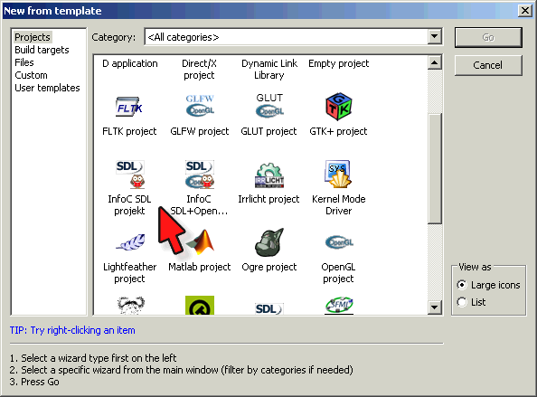

Az SDL telepítése
Czirkos Zoltán · 2015.02.18 · Frissítve: 2015.02.15
Az SDL grafikus könyvtár telepítése Windowson, Linuxon és Mac OS X-en.
Az SDL telepítéséhez két dolgot kell tenni. Először is, fel kell telepíteni az SDL fájljait valamilyen operációs rendszer specifikus módon. Utána pedig be kell állítani a fejlesztőkörnyezetet, hogy megtalálja azokat. Alább megtaláltok minden szükséges fájlt Windows-hoz és Mac OSX-hez is (Linuxon automatikus a dolog).
1Windows + Code::Blocks
Az SDL fájljai innen tölthetőek le:
SDL-1.2.14.infoc.zip.
Ezt ki kell csomagolni valahova. Van benne egy SDL-1.2.14 nevű mappa.
Azon belül három további mappát lehet találni: bin, include és lib.
- A
bin-ben lévő fájlokat be kell másolni aC:\Program Files\CodeBlocks\MinGW\binmappába. - Az
includeteljes tartalmát aC:\Program Files\CodeBlocks\MinGW\includemappába. - Ugyanígy a harmadikat, a
libtartalmát aC:\Program Files\CodeBlocks\MinGW\libhelyre.
Ha ez kész, akkor a Code::Blocks menüjéből ki kell választani a „Settings/Global variables…”
menüpontot. A „Current Set”-nél a „default”-ot, lentebb a „Current Variable”-nél az „sdl”-t. (Ha
nincs, akkor a „Current Variable”-lel egy sorban lévő „New” gombra kattintva létrehozható.) A
„base” mezőben meg kell adni a C:\Program Files\CodeBlocks\MinGW mappát.
Ahhoz, hogy megjelenjen a projektek között az InfoC SDL projekt, még néhány teendő van. A codeblocks_wizard-1312.zip
csomagban található fájlokat a C:\Program Files\CodeBlocks\share\CodeBlocks\templates\wizard
mappába kell másolni úgy, hogy az ott
lévő, eredeti config.script nevű felülíródjon. Ha sikerült a dolog, a Code::Blocks
újraindítása után a „New Project” menüpontnál megjelenik az InfoC SDL projekttípus.
Régebbi verziókhoz:
2Linux + Code::Blocks
Ez sokkal egyszerűbb, mint a fenti. Az SDL könyvtárak csomagból elérhetőek és automatikusan telepíthetőek. Ubuntun csak ennyit kell beírni egy parancssorba:
sudo apt-get install libsdl1.2-dev libsdl-gfx1.2-dev libsdl-image1.2-dev libsdl-ttf2.0-dev libsdl-mixer1.2-dev
Ezután
codeblocks_wizard-1312.zip csomagban található fájlokat (rendszergazdai jogokkal) az
/usr/share/codeblocks/templates/wizard mappába kell másolni, az
eredeti config.script fájlt felülírva. (Régebbi verziókhoz: lásd a fentebbi linkeket.)
Fordítás parancssorból. Jár az SDL-hez egy parancssori szkript, amely kiírja, hogy milyen paraméterek
szükségesek a fordítóprogram számára. Ez az sdl-config. Ennek kimenete a szükséges
opciók listája, amelyet a fordítónak a parancssorból át tudunk adni, a ` (backtick)
jellel. A hello.c SDL-es programunk lefordításához ennyit kell tenni parancssorból:
gcc hello.c -o hello `sdl-config --cflags --libs` -lSDL_gfx -lSDL_ttf -lSDL_image -lSDL_mixer
Ez az alap SDL mellett a többi függvénykönyvtárat is a programhoz linkeli.
3Windows + Visual Studio
Gyurácz Kristóf összeállított egy csomagot, amellyel az SDL használható a Visual Studio környezetben is. A szükséges fájlok letölthetők innen: SDL_VS.zip, a telepítési leírás: SDL_VS_install.pdf.
4Mac OS X
Szalai Albin készített egy installert, amely letölthető innen:
SDL_MacOSX_installer.dmg.
(32 bites OSX Lion és 64 bites OSX Mountain Lion verziókkal tesztelve.)
A fájlban van egy OLVASSEL.rtf nevű írás, amely bemutatja a használatot.